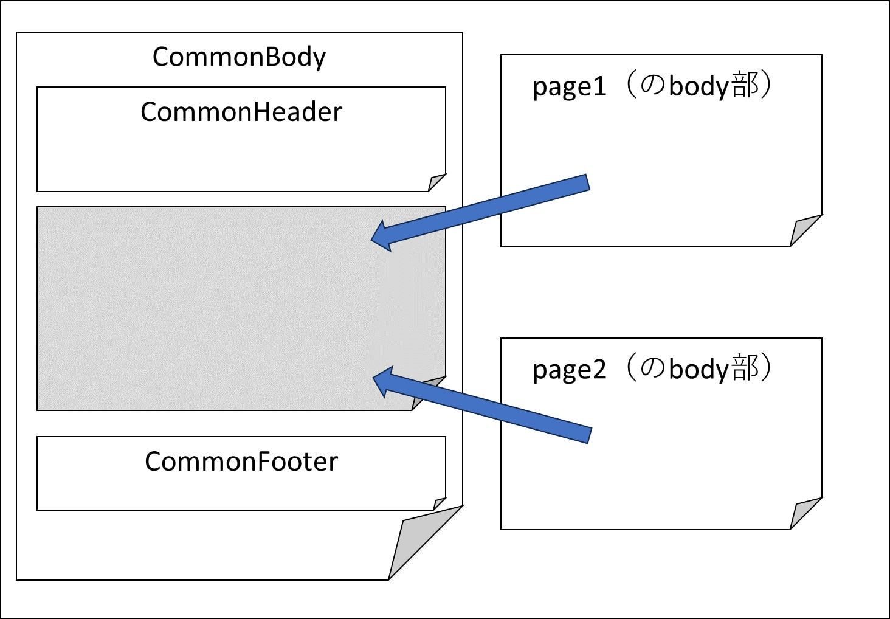

React/Next.js
React
Reactとは、WebサイトやWebアプリのUI部分を開発する際に活用するJavaScriptライブラリです。ReactはMeta (旧Facebook社)が開発し、2013年にオープンソース化されました。
リアクティブ・プログラミングを特徴としています。リアクティブとは、『何かの値が変化したり、何かしらイベントが発生するとそれがすぐに反映される仕組み』のことです。
ReactはJavaScript用のフレームワークと勘違いされることがありますが、実際には上述の通りライブラリとなります。CDN(Contents Delivery Network)経由でhtmlファイル内でReactのライブラリを使用することができます。
以下は実際にReactのライブラリを使用して書いたものです。
↓クリックでcounter増加
上記のソースコード（抜粋）
react_next.html<head>
<script src="https://unpkg.com/react@18/umd/react.development.js"></script>
<script src="https://unpkg.com/react-dom@18/umd/react-dom.development.js"></script>
</head>
<style>
#root {
cursor: pointer;
font-size: 20pt;
background-color: lightblue;
color: black;
padding: 10px 1px 5px 1px;
}
</style>
<div id="root" onClick="doCount();">wait....</div>
<script>
let counter = 0;
let dom = document.querySelector('#root');
doCount();
function doCount() {
counter++
let element = React.createElement(
'p', {}, "counter: " + counter
)
ReactDOM.render(element, dom)
}
</script>
上記はCDNを使用していますが、これは主に学習目的または小規模のアプリケーション目的での使用が適しています。
大規模な開発をする場合、Reactで重要な概念として以下3つがあります。
JSX(JavaScript XML)
JSXはJavaScriptの構文拡張で、JavaScriptファイル内にHTMLのようなコードを記述できるようにするものです。Meta（旧Facebook社）によって開発されました。たとえば、次のようなコードを書くことが出来ます。
const heading = <h1>Hello, JSX!</h1>;
このコードはHTMLのようにも見えますが、JavaScriptのコードです。headingという定数を作り、その定数にHTMLの要素（React要素）を代入しています。
JSXを記述する場合、ファイルの拡張子は.jsxとします。これにTypeScriptを適用する場合、拡張子は.tsxとします。
JSXでは中括弧 { } を使うことで、以下のようにReact要素内にJavaScriptの値を埋め込むことができます。
let name = 'React';
const heading = <h1>Hello, {name}</h1>;
コンポーネント
Reactでは、自分が書いたマークアップ、CSS、JavaScript を、アプリのための再利用可能な UI 要素にまとめることができます。これを『コンポーネント』と呼びます。
以下はWebサイトに表示するページのフッター部分を CommonFooter という名前でコンポーネント化したものです。
common_footer.tsxexport default function CommonFooter(labelKey: any): JSX.Element {
return (
<div>
<footer>
<p className="rights">
...
</p>
</footer>
</div>
);
}
コンポーネント化したフッターを呼び出す際は <CommonFooter /> と記述します。
以下は同じくコンポーネント化した CommonBody というコンポーネントから CommonFooter を呼び出しているサンプルです。
common_body.tsxexport default function CommonBody(body: any): JSX.Element {
<body>
<section className="box">
{body.message}
...
</section>
<CommonFooter /> {/* <!--/#main--> */}
</body>
}
React Hooks
React Hooksはフック(Hook)によって関数コンポーネント内で状態やライフサイクルを扱うための機能です。
公式が提供しているフックは10種類あり、さらにフックを組み合わせてカスタムフックを独自に実装できます。
| フック種類 | 用途（概要） | フック名 |
|---|---|---|
| 状態のフック (State Hooks) | 内部状態を持ち、その状態の変化に応じて表示を変更できる。 | useState |
| useReducer | ||
| メモ化のフック (Performance Hooks) | 値や関数を保持し、必要のない子要素のレンダリングや計算を抑止するために使用し、パフォーマンスの最適化を図る | useCallback |
| useMemo | ||
| 副作用のフック (Effect Hooks) | 副作用（コンポーネントの描画とは直接関係ない処理のこと）のためのフック。外部システムとの同期、イベントリスナ。 | useEffect |
| useLayoutEffect | ||
| Contextのためのフック (Context Hooks) | 親の変数を子コンポーネントで受け取る | useContext |
| refのフック (Ref Hooks) | レンダリングに使用しない情報を記録 | useRef |
| useImperativeHandle | ||
| Other Hooks | ライブラリ開発時に利用されるHooks | useDebugValue |
ReactではこのReact Hooksを利用してリアクティブなシステムを構築していきます。
例えば状態のフックであるuseStateなら以下のようなコーディングをすることでリアクティブにすることができます。
const [状態, 更新関数] = useState(初期状態)const [count, setCount] = useState(0);
<div>
<p>Count: {count}</p>
<button onClick={() => setCount(count + 1)}>+</button>
</div>
Next.js
ここではNext.jsの機能について記載していきます。
レンダリング
Nextで使えるレンダリング手法とその概要はこちらに記載しているので、どのようにしてそれを実現するかを記載します。
Nextでは、所定の関数を呼び出すことでレンダリングモードを制御します。使用する関数は以下です。getServerSideProps, getStaticProps と getStaticPaths は export する必要があります。
- getServerSideProps：ページを描画する前に呼ばれる。この関数が返した props を元にページが描画される。
- getStaticProps：ビルド時に実行される。revalidateに数値（秒数）を指定して返すと、指定秒数経過後に再レンダリングされる。
- getStaticPaths：事前にすべてのページを生成せず、必要に応じてhtml生成、およびキャッシュからの返却を行う。pathsにないパスに対してリクエストがあったときに、fallbackキーの値によって挙動が異なる。
- unstable_revalidate：当該関数が実行されたタイミングで、getStaticPropsを使用しているページが再レンダリングされる。
それぞれ対応するレンダリングモードは以下の通り。
| レンダリング手法 | 関数名 |
|---|---|
| SSR(Server-Side Rendering) | getServerSideProps |
| CSR(Client-Side Rendering) | -（デフォルトがCSRなので使用する関数は無し） |
| SSG(Static Site Generation) | getStaticProps |
| ISG(Incremental Static Generation) | getStaticPaths |
| ISR(Incremental Static Regeneration) | revalidateを返すgetStaticProps |
| On Demand ISR (On Demand Incremental Static Regeneration) | revalidateを返すgetStaticPropsとunstable_revalidateの組み合わせ |
ファイルベースルーティング
Next.jsの「ファイルベースルーティング」は、pagesディレクトリ内のファイル構成がそのままアプリケーションのページ構成になるという機能です。pages ディレクトリ配下にスクリプトファイルを配置すると、それを使って画面表示を行います。
例えば以下の画像のように配置した場合、 http://[ホスト名]/saga1/ability/ability_detail というurlで ability_detail.tsx の内容が表示されます。
Next.js では、すべてのページの初期化に App というコンポーネントを使用しています。pages/_app.tsx を作成することで、Appコンポーネントをカスタマイズできます。全ページに共通のcssを適応するなど、すべてのページで共通な処理などを書くことができます。
以下のコードは_app.tsxの中身です。1行目でimport '../styles/style.css'を記述することで、pages配下のすべてのページに style.css が適応されます。
_app.tsximport '../styles/style.css'
function MyApp({ Component, pageProps }) {
return 作った物

- 魔界塔士サガの仲間モンスター一覧
- 変身後モンスター算出
- 能力一覧
モンスター詳細情報のまとめ。
各モンスターの詳細画面と、変身後モンスター算出の詳細欄にお暗示内容が出力される。
同じ内容を書きたくないので、body部をクラス内に記載し、それを詳細画面と変身後モンスター算出の詳細欄の両方で流用する形にしている。
モンスター情報

モンスターが使用する能力の詳細。
画面のレイアウトをReactで記載し、表示する情報自体はDBに格納。
URLからIDを取得してそれをもとにDBから情報を取得して画面にレンダリング。
能力詳細
参考書籍

参考サイト
- kinsta Reactで使用するJSXの基本をわかりやすく解説
- Qiita Next.jsの_documment..tsxと_app.tsxについてメモ
- WESEEK Tech Blog 煩わしい設定は一切なし!Next.jsでCSS を使う方法
- Tyotto good! Next.jsの_documment.js(tsx)と_app.js(tsx)について爆速で理解しよう
- Qiita Next.jsの_app.jsと_document.js
- deve.K's Programming Primer - プログラミング初心者のための入門ブログ
- Zenn React Hooks 再入門
- WESEEK Tech Blog 煩わしい設定は一切なし!Next.jsでCSS を使う方法
- DevelopersIO Next.js 12.1の新機能オンデマンド ISRでページを手動再検証させてみた
- Zenn On-demand ISRの機能を試してみた
- kk-web Next.jsのOn-demand Revalidationの簡単な説明
- teamlab-frontend SSR, CSR, SSG, ISG, ISRの違いと使い分け方。それぞれNext.jsでTodoアプリ作ってみた。
- note Next.jsのIncremental Static Regenerationが凄い
- Zenn Next.js + TypeScript | CSR・SSR・SG・ISG・ISR・On Demand ISR の違いをコード付きで解説